昆汀·塔伦蒂诺
（Quentin Tarantino）
这张图片出自1992年由昆汀·塔伦蒂诺执导的犯罪电影《落水狗》（Reservoir Dogs）镜头的重点在于利用低角度的视角，将观众瞬间拉入被威胁的叙事中心

电影 / 风景 / 人物
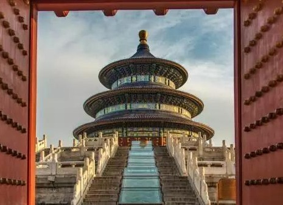
这是一张在北京天坛祈年门拍摄的作品。
它巧妙运用了框架式对称构图，将这座始建于1420年、象征天人合一的皇家祭祀建筑完美地呈现在视觉中心。
这种构图不仅展现了建筑的宏伟，更体现了中国古代礼制建筑中等级森严、严谨对称的核心思想。
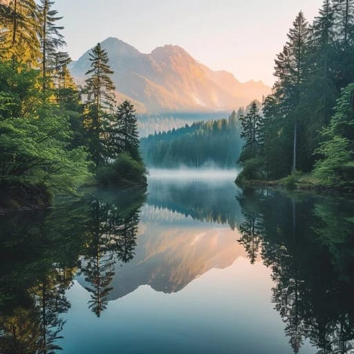
这张图片描绘一幅宁静对称风景，平静的山间湖泊倒仰着周围景色
这是一张利用水平对称构图表现“天人合一”意境的佳作。它捕捉（或模拟）了高山湖泊在日出时刻最静谧的一瞬间。
这张照片的取景地位于澳门的顺运新村（Soon Wan San Chuen）
典型的极致对称构图。采用仰拍视角，利用四周建筑边缘形成的几何“相框”聚焦中心飞过的飞机，展现了工业森林的秩序美。
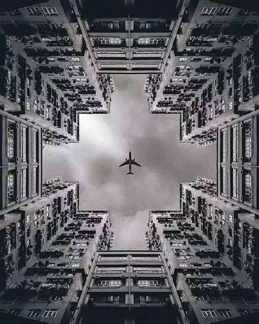
所在地：英国伦敦，金丝雀码头（Canary Wharf）
建筑名称：伦敦金丝雀码头 · 亚当斯广场桥（Adams Plaza Bridge）
设计单位：福斯特建筑事务所（Foster + Partners）
开放年份：2015年正式向公众开放。
成名原因：因作为2016年电影《星球大战：侠盗一号》的取景地而闻名全球。
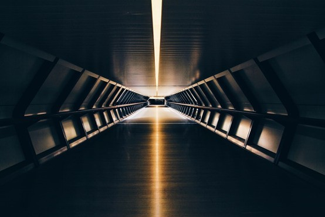
电影 / 风景 / 人物
由芬兰摄影师 Tommi Viitala 于 2014年 拍摄于 芬兰国家博物馆。
核心魅力： 将三维场景转化为二维平面，利用木地板的平行线条和楼梯的几何色块，构建出极具形式感的画面。
视觉重点： 模特的红裙与环境形成强烈的色彩对比，成为视觉中心。
这张富有艺术感的照片采用了高角度透视（也称为“顶视构图”），在木质地板上勾勒出女性舒展的姿态。这种摄影技巧常用于强调环境的几何感，并营造出一种宏大的空间尺度。
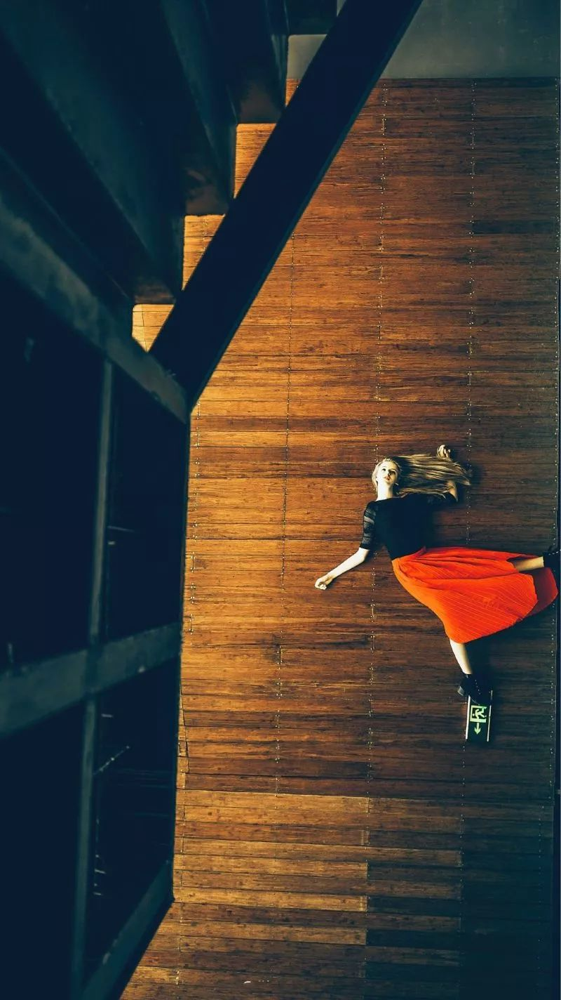
名称： 黄桷湾立交（又称盘龙立交）
地点： 中国 重庆市 南岸区
开工年份： 2009年9月
地位： 被誉为“重庆最复杂立交桥”，甚至被称为“世界最复杂立交”。
它是连接重庆主城多个区域的核心交通枢纽。
线条交织： 复杂的曲线与直线相互交错，形成了类似城市“血管”或“神经网络”的视觉效果。
对比感： 画面左侧可以看到正在施工的部分（塔吊），展现了城市处于不断生长和扩建的状态；
周围林立的高层住宅则与宏伟的立交桥共同构成了重庆独特的立体城市景观。
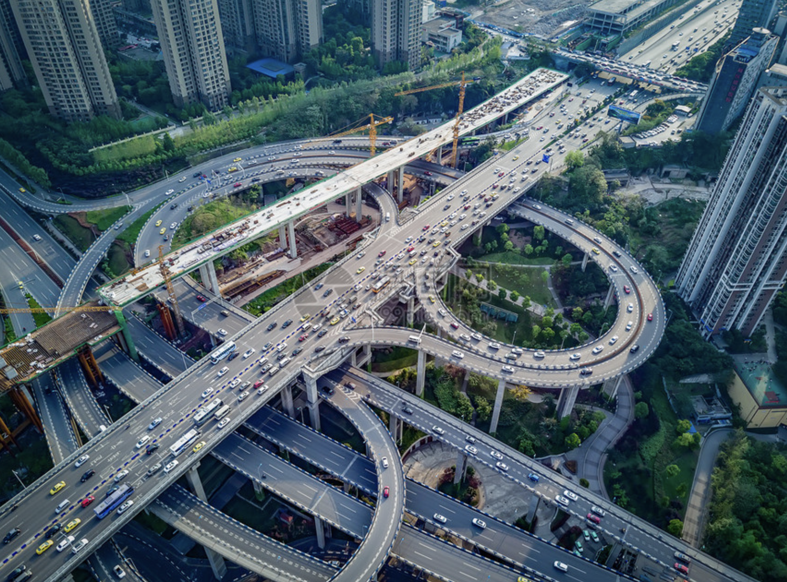
作品带来有程序感也有几份美感这是一张利用极端视角将日常交通场景转化为高度有序的平面艺术的典型案例。
这种构图方式的核心在于捕捉现实世界中的几何规律。
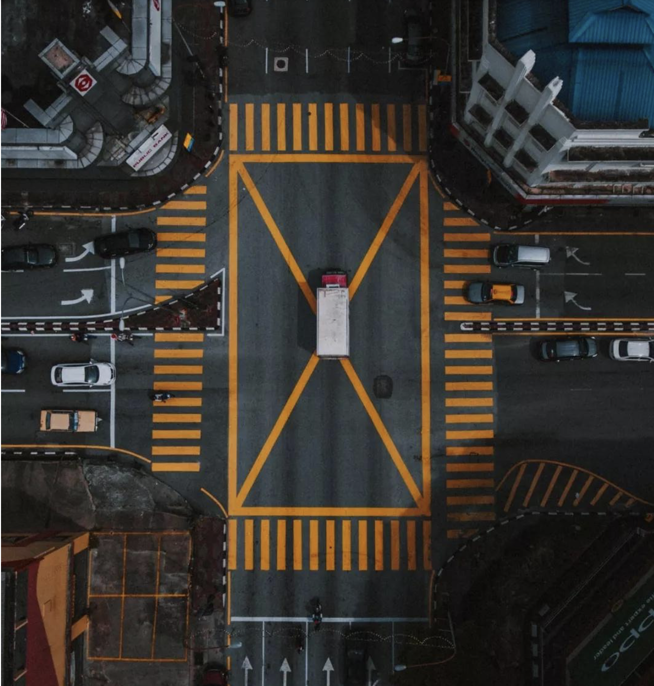
以这个螺旋楼梯位于匈牙利布达佩斯通常被称为“包豪斯楼梯”（Stairway to Bauhaus）
这张图厉害的地方在于：
用椭圆旋转结构 + 重复层级 + 中心构图，创造出“无限下坠”的视觉效果。
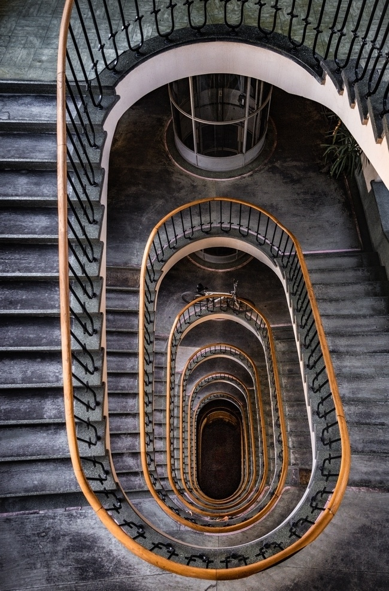
电影/风景/人物
这张图采用了极具视觉冲击力的低角度构图（Low-Angle Shot）
低角度摄影： 摄影师采用了极低的角度，利用马路中央的白色分道线作为引导线，增强了画面的延伸感和都市氛围。
黄金时刻： 画面捕捉了日落时分的“魔幻时刻”，橙红色的霞光映照在街道和建筑上，形成了鲜明的明暗对比。
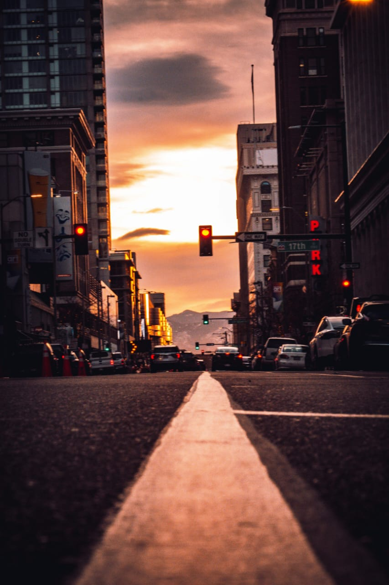
这张照片是极限运动摄影的典范。通过低视角与鱼眼镜头的完美结合，摄影师不仅记录了一个高难度的动作，更将圣保罗标志性的街头文化与现代城市景观融合在了一起，呈现出极具张力的艺术效果。
画面中的背景建筑和标志性的坡道设计指向圣保罗的 Vale do Anhangabaú（安汉加巴乌谷）。
这里是当地著名的滑板圣地，在2020年至2021年间进行了大规模翻新，变成了集休闲与运动于一体的现代化广场
具体地点: 巴西，圣保罗（São Paulo, Brazil）
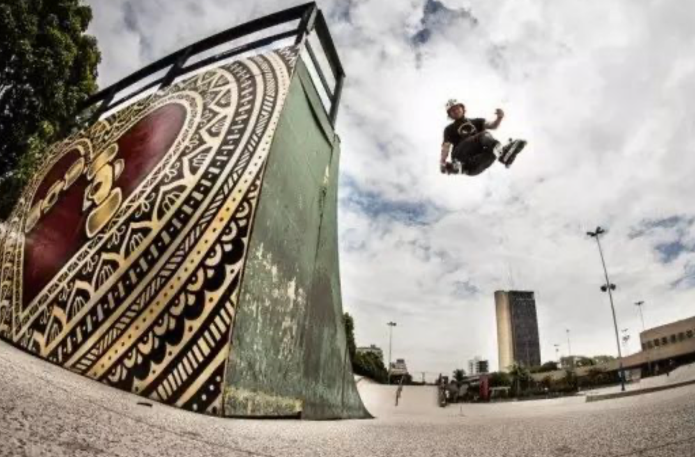
这张图片出自1992年由昆汀·塔伦蒂诺执导的犯罪电影《落水狗》（Reservoir Dogs）镜头的重点在于利用低角度的视角，将观众瞬间拉入被威胁的叙事中心
名称： 《无耻混蛋》（Inglourious Basterds）
年份： 2009年
地点： 影片背景设定在二战期间纳粹占领下的法国
这张剧照是昆汀电影中最具代表性的暴力美学瞬间之一
通过低角度仰拍，导演不仅完成了对反派（视角主人）的心理施压，也向经典黑帮/战争电影的构图致敬，完美展现了“混蛋小队”令敌人胆寒的威慑形象
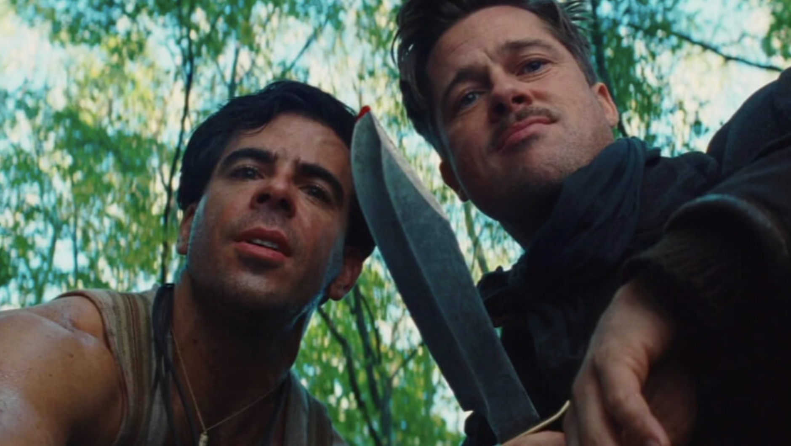
电影 / 风景 / 人物
地点：加拿大魁北克国家美术博物馆（MNBAQ）皮埃尔·拉松德展馆。
构图：引导线构图利用扶手的螺旋曲线，将观众视线从底部直接引向楼梯上的人物主体，增强了画面的空间纵深感。
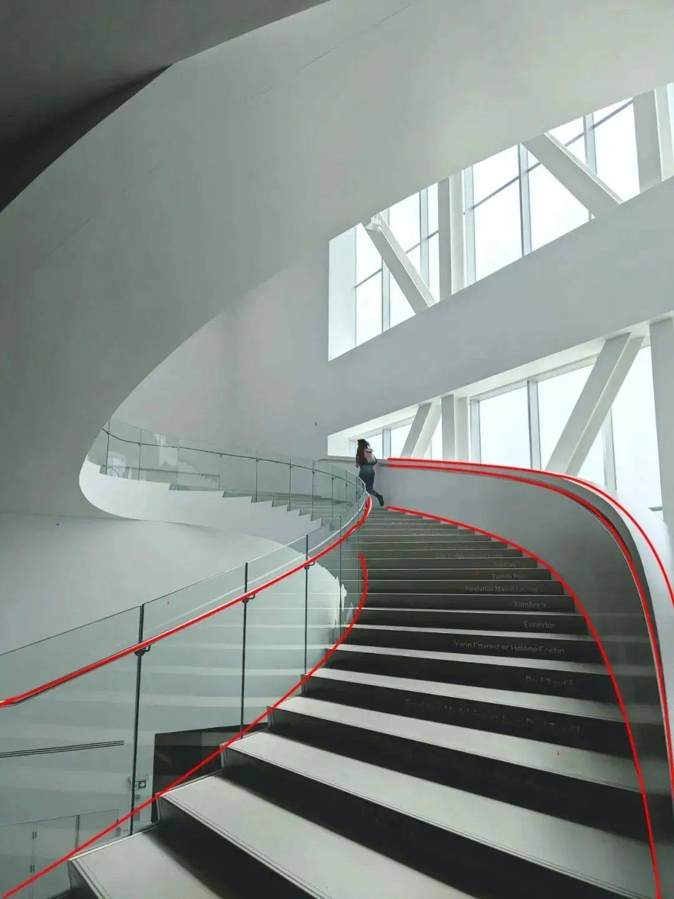
这张图片展现的是2019年电影《小丑》（Joker）中的一个经典场景，由华金·菲尼克斯饰演的亚瑟·弗莱克在纽约市布朗克斯区的这一著名台阶上翩翩起舞。
视觉路径： 利用左侧楼梯扶手和阶梯边缘形成的平行斜线，自然地将观众视线从左下角引向右侧的人物主体。
空间纵深： 这些线条营造了强烈的透视感，让平面画面显得更有立体深度。
强化焦点： 线条的指向性与三分法（九宫格交点）结合，锁定了画面唯一的视觉中心，增强了戏剧张力。
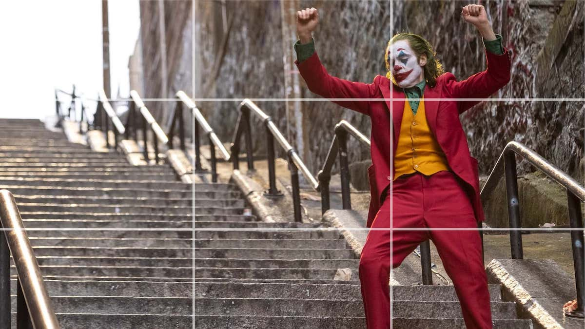
这张照片的拍摄地点位于英国伦敦，具体的摄影位是在 One New Change 购物中心。
这种构图成功地利用了现代（直线、金属、玻璃）与古典（圆弧、石材、历史建筑）的强烈对比
引导线不仅是视觉上的指引，更像是一种“时空隧道”，带你穿越现代建筑看向历史遗迹
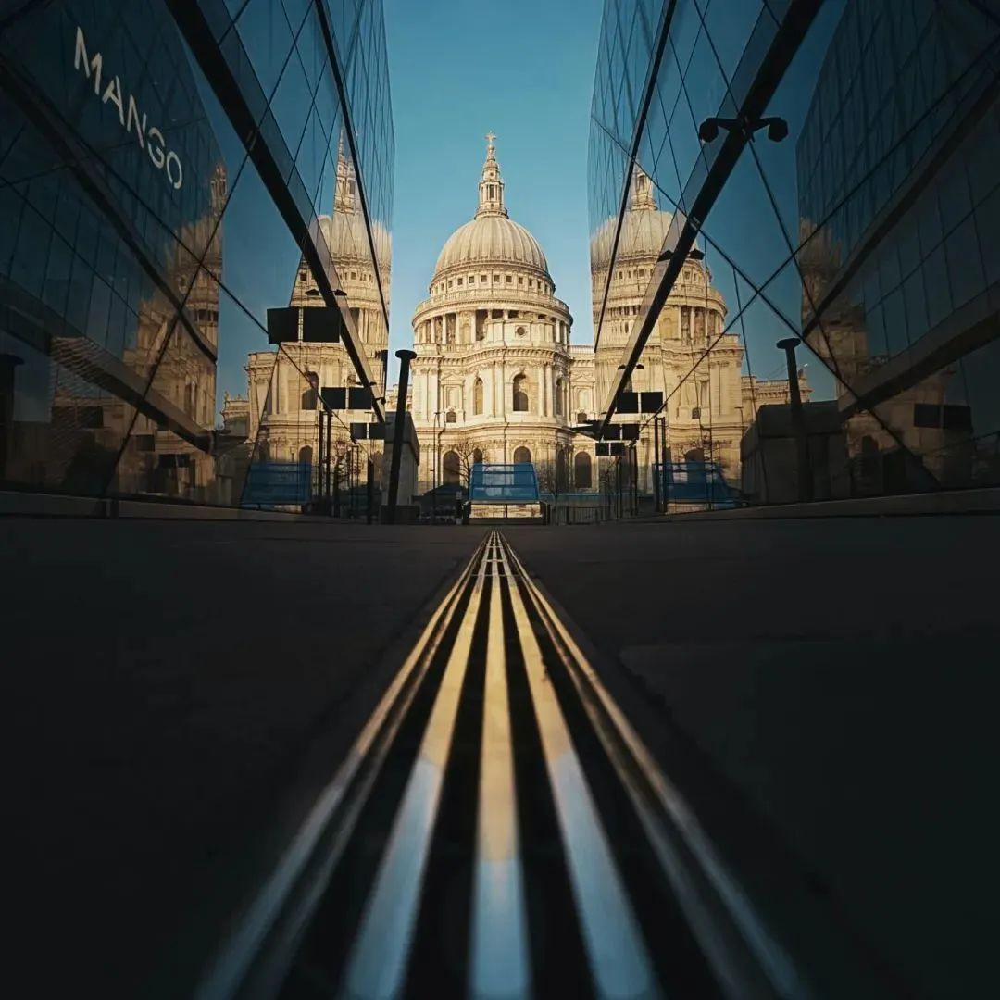
这张图片展示了伦敦地铁（London Underground）站台的场景
线条在这里充当了“视觉向导”，不仅告诉观众该往哪看，
还通过这种透视关系增强了照片的故事感。
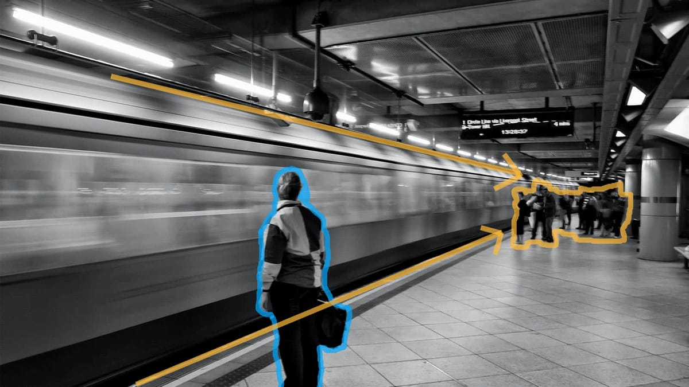

AI Website Generator